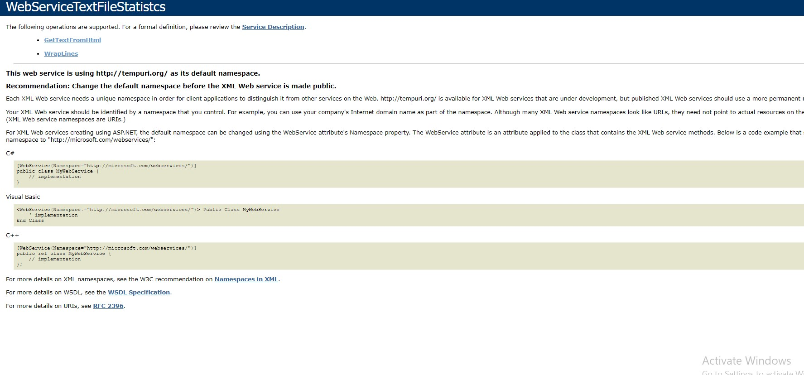

NET API
This was an uni project. The name is called textfilestatistics because the original idea was to have an API that shows statistcs of imput text such as number of words, type of words etc.
It was changed after to simply converting text to html code.
link:github.com/kirilyordanov99/API
Technologies:
- - C#
- - JS
- - CSS
- - HTML
- - XML